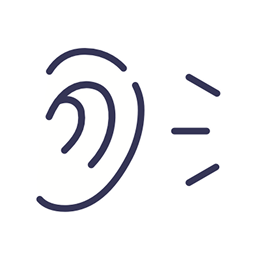
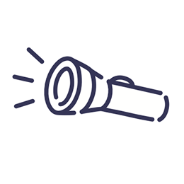

About
私たちについて
合同会社シンタケダは、企業やサービスのブランディングをお手伝いする会社です。
ブランディングの取り組みを通じて、組織が抱える課題を丁寧に紐解き、
その奥に隠れた価値を照らし出す“課題駆動型ブランディング”で、
社会に求められる持続可能な事業をつくり、企業の未来を共に描きます。
Process
進め方

1聴く
まずはヒアリングを通じて、組織の現状やご担当者様のお悩みをじっくりとお聞きします。改善の障害やジレンマ、個人的な思いなどをお話しいただくことで、一旦『肩の荷を下ろして』いただき、新たな気持ちでスタートする準備を整えます。
2見る
次に、現状を可視化するため、課題をすべてテーブルに並べ、重要度や緊急度を客観的に分析します。課題のつながりを整理し、中長期的な目標を設定した上で、優先度の高い課題から順に取り組みます。

3照らす
ひとつひとつの課題に丁寧に取り組みながら深いところにある課題の本質を明らかにします。本質を捉えた上で課題に向き合うことで、今まで見えていなかった企業の価値や可能性が見つかります。そして見つけたその価値に光を当て、未来への力に変えていきます。